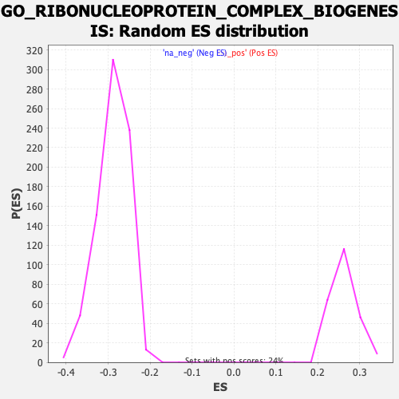

| | | Dataset | DE_genes |
| Phenotype | NoPhenotypeAvailable |
| Upregulated in class | na_neg |
| GeneSet | GO_RIBONUCLEOPROTEIN_COMPLEX_BIOGENESIS |
| Enrichment Score (ES) | -0.5194337 |
| Normalized Enrichment Score (NES) | -1.8006759 |
| Nominal p-value | 0.0 |
| FDR q-value | 0.023629392 |
| FWER p-Value | 0.094 |
Table: GSEA Results Summary
 Fig 1: Enrichment plot: GO_RIBONUCLEOPROTEIN_COMPLEX_BIOGENESIS
Fig 1: Enrichment plot: GO_RIBONUCLEOPROTEIN_COMPLEX_BIOGENESIS
Profile of the Running ES Score & Positions of GeneSet Members on the Rank Ordered List
| PROBE | GENE SYMBOL | GENE_TITLE | RANK IN GENE LIST | RANK METRIC SCORE | RUNNING ES | CORE ENRICHMENT | | 1 | NOP10 | | | 325 | 2.613 | -0.0130 | No |
| 2 | SF3A2 | | | 358 | 2.399 | -0.0073 | No |
| 3 | MCTS1 | | | 480 | 1.830 | -0.0094 | No |
| 4 | ERI1 | | | 778 | 1.144 | -0.0254 | No |
| 5 | PTEN | | | 1127 | 0.736 | -0.0460 | No |
| 6 | GEMIN2 | | | 1174 | 0.697 | -0.0468 | No |
| 7 | ADAR | | | 1411 | 0.563 | -0.0606 | No |
| 8 | BRIX1 | | | 1433 | 0.550 | -0.0602 | No |
| 9 | EIF2S3 | | | 1528 | 0.506 | -0.0648 | No |
| 10 | RPS24 | | | 1652 | 0.452 | -0.0715 | No |
| 11 | ZNHIT6 | | | 1668 | 0.447 | -0.0710 | No |
| 12 | GLUL | | | 1677 | 0.444 | -0.0701 | No |
| 13 | SF1 | | | 1691 | 0.436 | -0.0695 | No |
| 14 | EXOSC3 | | | 1730 | 0.415 | -0.0707 | No |
| 15 | RPL38 | | | 1745 | 0.410 | -0.0703 | No |
| 16 | SCAF11 | | | 1759 | 0.404 | -0.0698 | No |
| 17 | RPL35A | | | 1767 | 0.401 | -0.0690 | No |
| 18 | RRP15 | | | 1864 | 0.364 | -0.0742 | No |
| 19 | RPS21 | | | 1904 | 0.353 | -0.0756 | No |
| 20 | AGO3 | | | 2033 | 0.317 | -0.0830 | No |
| 21 | POP4 | | | 2062 | 0.307 | -0.0839 | No |
| 22 | RPL12 | | | 2098 | 0.298 | -0.0852 | No |
| 23 | DIMT1 | | | 2105 | 0.296 | -0.0847 | No |
| 24 | GTF3A | | | 2114 | 0.294 | -0.0843 | No |
| 25 | RPS27L | | | 2124 | 0.290 | -0.0839 | No |
| 26 | RPP40 | | | 2282 | 0.247 | -0.0935 | No |
| 27 | RCL1 | | | 2322 | 0.240 | -0.0953 | No |
| 28 | EIF3J | | | 2334 | 0.236 | -0.0953 | No |
| 29 | RPL26 | | | 2347 | 0.233 | -0.0953 | No |
| 30 | DDX10 | | | 2472 | 0.214 | -0.1028 | No |
| 31 | DENR | | | 2492 | 0.210 | -0.1034 | No |
| 32 | RPS10 | | | 2535 | 0.203 | -0.1055 | No |
| 33 | RPS27 | | | 2559 | 0.198 | -0.1064 | No |
| 34 | KRR1 | | | 2681 | 0.179 | -0.1138 | No |
| 35 | RUVBL1 | | | 2690 | 0.177 | -0.1138 | No |
| 36 | PA2G4 | | | 2752 | 0.168 | -0.1173 | No |
| 37 | NPM1 | | | 2760 | 0.167 | -0.1172 | No |
| 38 | GNL3L | | | 2914 | 0.148 | -0.1269 | No |
| 39 | NSA2 | | | 2988 | 0.141 | -0.1312 | No |
| 40 | RPF2 | | | 3011 | 0.138 | -0.1322 | No |
| 41 | GTPBP10 | | | 3058 | 0.135 | -0.1349 | No |
| 42 | DDX39B | | | 3184 | 0.124 | -0.1427 | No |
| 43 | SNRPF | | | 3197 | 0.122 | -0.1431 | No |
| 44 | MPV17L2 | | | 3240 | 0.119 | -0.1455 | No |
| 45 | EMG1 | | | 3258 | 0.116 | -0.1463 | No |
| 46 | TXNL4A | | | 3575 | 0.094 | -0.1669 | No |
| 47 | TAF9 | | | 3577 | 0.094 | -0.1667 | No |
| 48 | ERAL1 | | | 3648 | 0.089 | -0.1710 | No |
| 49 | NOL11 | | | 3789 | 0.082 | -0.1800 | No |
| 50 | PIH1D2 | | | 4088 | 0.065 | -0.1996 | No |
| 51 | CLNS1A | | | 4181 | 0.060 | -0.2055 | No |
| 52 | BTRC | | | 4214 | 0.057 | -0.2074 | No |
| 53 | FCF1 | | | 4349 | 0.050 | -0.2161 | No |
| 54 | WDR3 | | | 4374 | 0.049 | -0.2175 | No |
| 55 | RSL24D1 | | | 4536 | 0.039 | -0.2281 | No |
| 56 | ATR | | | 4567 | 0.038 | -0.2299 | No |
| 57 | SHQ1 | | | 4661 | 0.034 | -0.2360 | No |
| 58 | SNRPD1 | | | 4931 | 0.020 | -0.2538 | No |
| 59 | SRPK3 | | | 4958 | 0.019 | -0.2554 | No |
| 60 | MPHOSPH6 | | | 5071 | 0.012 | -0.2628 | No |
| 61 | ZNF658 | | | 5094 | 0.011 | -0.2642 | No |
| 62 | HSP90AA1 | | | 5114 | 0.010 | -0.2654 | No |
| 63 | RPUSD1 | | | 5286 | 0.002 | -0.2768 | No |
| 64 | CELF4 | | | 5346 | -0.002 | -0.2807 | No |
| 65 | HEATR3 | | | 5413 | -0.005 | -0.2850 | No |
| 66 | SDAD1 | | | 5424 | -0.006 | -0.2857 | No |
| 67 | RPL27 | | | 5754 | -0.023 | -0.3074 | No |
| 68 | AGO2 | | | 5782 | -0.025 | -0.3091 | No |
| 69 | SETX | | | 5836 | -0.028 | -0.3125 | No |
| 70 | MRPL36 | | | 5892 | -0.032 | -0.3161 | No |
| 71 | NCBP1 | | | 5969 | -0.037 | -0.3210 | No |
| 72 | RPL11 | | | 5981 | -0.038 | -0.3216 | No |
| 73 | DDX49 | | | 5999 | -0.039 | -0.3226 | No |
| 74 | ERCC2 | | | 6046 | -0.042 | -0.3255 | No |
| 75 | EXOSC5 | | | 6132 | -0.048 | -0.3310 | No |
| 76 | NUDT21 | | | 6149 | -0.050 | -0.3319 | No |
| 77 | ISG20 | | | 6203 | -0.053 | -0.3352 | No |
| 78 | ABCE1 | | | 6228 | -0.054 | -0.3366 | No |
| 79 | SF3A1 | | | 6311 | -0.060 | -0.3419 | No |
| 80 | DDX27 | | | 6321 | -0.060 | -0.3423 | No |
| 81 | RBMX | | | 6328 | -0.060 | -0.3425 | No |
| 82 | DDX3X | | | 6348 | -0.062 | -0.3435 | No |
| 83 | NIP7 | | | 6362 | -0.063 | -0.3442 | No |
| 84 | RSL1D1 | | | 6402 | -0.065 | -0.3466 | No |
| 85 | CRNKL1 | | | 6481 | -0.071 | -0.3515 | No |
| 86 | SRPK1 | | | 6674 | -0.086 | -0.3639 | No |
| 87 | NHP2 | | | 6755 | -0.092 | -0.3689 | No |
| 88 | EIF3I | | | 6794 | -0.095 | -0.3711 | No |
| 89 | RPP38 | | | 6860 | -0.099 | -0.3751 | No |
| 90 | EXOSC9 | | | 6900 | -0.103 | -0.3774 | No |
| 91 | UTP14A | | | 6902 | -0.103 | -0.3771 | No |
| 92 | RRNAD1 | | | 6929 | -0.105 | -0.3785 | No |
| 93 | GAR1 | | | 7027 | -0.113 | -0.3845 | No |
| 94 | SNRPD3 | | | 7042 | -0.114 | -0.3851 | No |
| 95 | RPS15 | | | 7097 | -0.118 | -0.3883 | No |
| 96 | UTP15 | | | 7129 | -0.121 | -0.3900 | No |
| 97 | USP4 | | | 7161 | -0.123 | -0.3916 | No |
| 98 | RPF1 | | | 7197 | -0.127 | -0.3935 | No |
| 99 | CLP1 | | | 7211 | -0.128 | -0.3940 | No |
| 100 | SNRPE | | | 7218 | -0.128 | -0.3939 | No |
| 101 | TGS1 | | | 7304 | -0.136 | -0.3991 | No |
| 102 | CELF2 | | | 7325 | -0.138 | -0.4000 | No |
| 103 | BOP1 | | | 7354 | -0.141 | -0.4014 | No |
| 104 | RPS7 | | | 7518 | -0.153 | -0.4117 | No |
| 105 | PTGES3 | | | 7534 | -0.154 | -0.4122 | No |
| 106 | SRSF1 | | | 7647 | -0.165 | -0.4191 | No |
| 107 | RRS1 | | | 7688 | -0.170 | -0.4212 | No |
| 108 | RPP30 | | | 7700 | -0.171 | -0.4214 | No |
| 109 | RPL35 | | | 7729 | -0.173 | -0.4226 | No |
| 110 | SRSF12 | | | 7750 | -0.175 | -0.4234 | No |
| 111 | MRPS7 | | | 7757 | -0.175 | -0.4232 | No |
| 112 | DDX21 | | | 7780 | -0.177 | -0.4241 | No |
| 113 | GEMIN5 | | | 7836 | -0.183 | -0.4272 | No |
| 114 | HELQ | | | 7847 | -0.184 | -0.4272 | No |
| 115 | RIOK1 | | | 7867 | -0.186 | -0.4279 | No |
| 116 | LSM6 | | | 7924 | -0.191 | -0.4310 | No |
| 117 | CELF1 | | | 7931 | -0.192 | -0.4307 | No |
| 118 | FDXACB1 | | | 7970 | -0.195 | -0.4326 | No |
| 119 | NOL9 | | | 7989 | -0.197 | -0.4332 | No |
| 120 | NVL | | | 7993 | -0.197 | -0.4327 | No |
| 121 | CEBPZ | | | 8143 | -0.213 | -0.4419 | No |
| 122 | UTP23 | | | 8216 | -0.219 | -0.4460 | No |
| 123 | IMP3 | | | 8236 | -0.222 | -0.4465 | No |
| 124 | MRPS11 | | | 8269 | -0.226 | -0.4479 | No |
| 125 | DDX52 | | | 8274 | -0.226 | -0.4474 | No |
| 126 | SUV39H1 | | | 8322 | -0.231 | -0.4498 | No |
| 127 | RPL26L1 | | | 8404 | -0.240 | -0.4544 | No |
| 128 | DDX17 | | | 8575 | -0.259 | -0.4648 | No |
| 129 | PPAN | | | 8595 | -0.261 | -0.4652 | No |
| 130 | GEMIN6 | | | 8625 | -0.264 | -0.4662 | No |
| 131 | SRPK2 | | | 8646 | -0.267 | -0.4667 | No |
| 132 | FRG1 | | | 8677 | -0.271 | -0.4678 | No |
| 133 | AATF | | | 8725 | -0.277 | -0.4700 | No |
| 134 | YTHDC1 | | | 8745 | -0.280 | -0.4704 | No |
| 135 | ATM | | | 8766 | -0.282 | -0.4708 | No |
| 136 | HSP90AB1 | | | 8785 | -0.284 | -0.4710 | No |
| 137 | PSIP1 | | | 8794 | -0.285 | -0.4706 | No |
| 138 | CUL4B | | | 8797 | -0.286 | -0.4698 | No |
| 139 | EXOSC1 | | | 8861 | -0.293 | -0.4731 | No |
| 140 | NPM3 | | | 8967 | -0.305 | -0.4790 | No |
| 141 | EIF2A | | | 8987 | -0.308 | -0.4793 | No |
| 142 | NSUN3 | | | 8989 | -0.309 | -0.4783 | No |
| 143 | AGO4 | | | 8990 | -0.309 | -0.4773 | No |
| 144 | PWP1 | | | 9038 | -0.316 | -0.4794 | No |
| 145 | TRMT112 | | | 9056 | -0.318 | -0.4795 | No |
| 146 | SART3 | | | 9072 | -0.320 | -0.4795 | No |
| 147 | NAF1 | | | 9074 | -0.320 | -0.4785 | No |
| 148 | EIF2S2 | | | 9091 | -0.321 | -0.4785 | No |
| 149 | USP39 | | | 9177 | -0.332 | -0.4831 | No |
| 150 | MRPL20 | | | 9237 | -0.339 | -0.4859 | No |
| 151 | PRPF3 | | | 9296 | -0.347 | -0.4886 | No |
| 152 | DDX18 | | | 9299 | -0.347 | -0.4876 | No |
| 153 | RPS2 | | | 9313 | -0.348 | -0.4873 | No |
| 154 | YBEY | | | 9325 | -0.350 | -0.4869 | No |
| 155 | XPO1 | | | 9553 | -0.381 | -0.5007 | No |
| 156 | EIF5 | | | 9608 | -0.390 | -0.5030 | No |
| 157 | SNRPB | | | 9609 | -0.390 | -0.5017 | No |
| 158 | DDX20 | | | 9657 | -0.397 | -0.5036 | No |
| 159 | EXOSC6 | | | 9733 | -0.408 | -0.5072 | No |
| 160 | PRPF18 | | | 9770 | -0.412 | -0.5083 | No |
| 161 | RPS8 | | | 9787 | -0.415 | -0.5080 | No |
| 162 | EXOSC2 | | | 9801 | -0.418 | -0.5075 | No |
| 163 | RPL23A | | | 9861 | -0.426 | -0.5100 | No |
| 164 | NOB1 | | | 9908 | -0.433 | -0.5116 | No |
| 165 | LUC7L2 | | | 9942 | -0.438 | -0.5124 | No |
| 166 | NGDN | | | 9961 | -0.441 | -0.5121 | No |
| 167 | CDC73 | | | 9988 | -0.445 | -0.5124 | No |
| 168 | NOL3 | | | 10041 | -0.452 | -0.5144 | No |
| 169 | SBDS | | | 10054 | -0.455 | -0.5137 | No |
| 170 | EIF3M | | | 10093 | -0.460 | -0.5147 | No |
| 171 | RPS6 | | | 10101 | -0.462 | -0.5137 | No |
| 172 | TSR2 | | | 10157 | -0.471 | -0.5158 | No |
| 173 | NUFIP1 | | | 10213 | -0.479 | -0.5179 | Yes |
| 174 | PAK1IP1 | | | 10232 | -0.482 | -0.5175 | Yes |
| 175 | SNUPN | | | 10239 | -0.483 | -0.5163 | Yes |
| 176 | GTF2H5 | | | 10256 | -0.484 | -0.5158 | Yes |
| 177 | GEMIN8 | | | 10260 | -0.485 | -0.5144 | Yes |
| 178 | POP7 | | | 10267 | -0.486 | -0.5132 | Yes |
| 179 | SNRPG | | | 10324 | -0.494 | -0.5153 | Yes |
| 180 | DKC1 | | | 10353 | -0.499 | -0.5156 | Yes |
| 181 | DICER1 | | | 10361 | -0.499 | -0.5144 | Yes |
| 182 | HEATR1 | | | 10374 | -0.501 | -0.5136 | Yes |
| 183 | TFB1M | | | 10386 | -0.503 | -0.5127 | Yes |
| 184 | RPS16 | | | 10412 | -0.507 | -0.5127 | Yes |
| 185 | XRN2 | | | 10493 | -0.518 | -0.5163 | Yes |
| 186 | EIF3E | | | 10497 | -0.518 | -0.5148 | Yes |
| 187 | UTP14C | | | 10499 | -0.519 | -0.5132 | Yes |
| 188 | WBP11 | | | 10524 | -0.524 | -0.5131 | Yes |
| 189 | DHX37 | | | 10535 | -0.525 | -0.5120 | Yes |
| 190 | UTP18 | | | 10581 | -0.534 | -0.5133 | Yes |
| 191 | DDX54 | | | 10603 | -0.539 | -0.5129 | Yes |
| 192 | RRP1B | | | 10620 | -0.541 | -0.5122 | Yes |
| 193 | COIL | | | 10649 | -0.545 | -0.5123 | Yes |
| 194 | MALSU1 | | | 10681 | -0.550 | -0.5125 | Yes |
| 195 | RPL24 | | | 10729 | -0.557 | -0.5138 | Yes |
| 196 | NOM1 | | | 10730 | -0.557 | -0.5120 | Yes |
| 197 | FTSJ3 | | | 10731 | -0.558 | -0.5102 | Yes |
| 198 | MRM1 | | | 10811 | -0.569 | -0.5136 | Yes |
| 199 | CELF6 | | | 10843 | -0.574 | -0.5138 | Yes |
| 200 | GEMIN7 | | | 10876 | -0.579 | -0.5140 | Yes |
| 201 | SRSF6 | | | 10883 | -0.579 | -0.5125 | Yes |
| 202 | METTL15 | | | 10892 | -0.580 | -0.5112 | Yes |
| 203 | SFSWAP | | | 10893 | -0.580 | -0.5093 | Yes |
| 204 | EXOSC10 | | | 10901 | -0.582 | -0.5079 | Yes |
| 205 | NOL10 | | | 10927 | -0.587 | -0.5076 | Yes |
| 206 | PRMT5 | | | 10952 | -0.590 | -0.5073 | Yes |
| 207 | ZCCHC4 | | | 10981 | -0.594 | -0.5072 | Yes |
| 208 | RRP8 | | | 11005 | -0.598 | -0.5068 | Yes |
| 209 | RPS14 | | | 11038 | -0.604 | -0.5069 | Yes |
| 210 | ZNHIT3 | | | 11040 | -0.604 | -0.5050 | Yes |
| 211 | TRMT61B | | | 11061 | -0.608 | -0.5044 | Yes |
| 212 | WDR12 | | | 11065 | -0.609 | -0.5026 | Yes |
| 213 | RIOK3 | | | 11078 | -0.611 | -0.5014 | Yes |
| 214 | MRPL1 | | | 11093 | -0.614 | -0.5003 | Yes |
| 215 | EIF3F | | | 11142 | -0.625 | -0.5015 | Yes |
| 216 | ERI3 | | | 11184 | -0.632 | -0.5021 | Yes |
| 217 | POLR2D | | | 11224 | -0.641 | -0.5026 | Yes |
| 218 | GEMIN4 | | | 11283 | -0.653 | -0.5043 | Yes |
| 219 | NUP88 | | | 11326 | -0.662 | -0.5050 | Yes |
| 220 | WDR77 | | | 11367 | -0.670 | -0.5054 | Yes |
| 221 | RPL6 | | | 11404 | -0.679 | -0.5056 | Yes |
| 222 | SNRPC | | | 11412 | -0.681 | -0.5038 | Yes |
| 223 | NOP14 | | | 11419 | -0.683 | -0.5020 | Yes |
| 224 | MRPL10 | | | 11444 | -0.687 | -0.5014 | Yes |
| 225 | PELP1 | | | 11453 | -0.688 | -0.4997 | Yes |
| 226 | DDX1 | | | 11493 | -0.697 | -0.5000 | Yes |
| 227 | RRN3 | | | 11496 | -0.698 | -0.4978 | Yes |
| 228 | CHD7 | | | 11511 | -0.701 | -0.4965 | Yes |
| 229 | TBL3 | | | 11557 | -0.710 | -0.4972 | Yes |
| 230 | METTL16 | | | 11567 | -0.712 | -0.4954 | Yes |
| 231 | UTP3 | | | 11582 | -0.716 | -0.4940 | Yes |
| 232 | RPS19 | | | 11606 | -0.721 | -0.4932 | Yes |
| 233 | EIF3H | | | 11651 | -0.733 | -0.4937 | Yes |
| 234 | NUDT16 | | | 11702 | -0.743 | -0.4946 | Yes |
| 235 | SNRPD2 | | | 11710 | -0.743 | -0.4927 | Yes |
| 236 | WDR36 | | | 11749 | -0.750 | -0.4928 | Yes |
| 237 | RPUSD2 | | | 11766 | -0.755 | -0.4914 | Yes |
| 238 | DDX28 | | | 11783 | -0.758 | -0.4899 | Yes |
| 239 | MRPL22 | | | 11850 | -0.772 | -0.4918 | Yes |
| 240 | EIF3K | | | 11851 | -0.773 | -0.4893 | Yes |
| 241 | DROSHA | | | 11882 | -0.780 | -0.4887 | Yes |
| 242 | THUMPD1 | | | 11906 | -0.787 | -0.4877 | Yes |
| 243 | STRAP | | | 12001 | -0.805 | -0.4913 | Yes |
| 244 | MRTO4 | | | 12009 | -0.807 | -0.4891 | Yes |
| 245 | RAN | | | 12033 | -0.812 | -0.4880 | Yes |
| 246 | NMD3 | | | 12048 | -0.814 | -0.4863 | Yes |
| 247 | RPP25 | | | 12074 | -0.819 | -0.4853 | Yes |
| 248 | EIF4A3 | | | 12080 | -0.822 | -0.4829 | Yes |
| 249 | PRPF8 | | | 12158 | -0.843 | -0.4853 | Yes |
| 250 | RPL5 | | | 12168 | -0.846 | -0.4831 | Yes |
| 251 | LYAR | | | 12221 | -0.859 | -0.4838 | Yes |
| 252 | LTV1 | | | 12303 | -0.878 | -0.4863 | Yes |
| 253 | NOL6 | | | 12306 | -0.879 | -0.4836 | Yes |
| 254 | DIS3 | | | 12370 | -0.893 | -0.4848 | Yes |
| 255 | WDR46 | | | 12425 | -0.911 | -0.4854 | Yes |
| 256 | NSUN5 | | | 12428 | -0.912 | -0.4826 | Yes |
| 257 | RUVBL2 | | | 12431 | -0.912 | -0.4798 | Yes |
| 258 | RPL13A | | | 12436 | -0.913 | -0.4771 | Yes |
| 259 | PRPF19 | | | 12467 | -0.920 | -0.4761 | Yes |
| 260 | WDR55 | | | 12519 | -0.933 | -0.4764 | Yes |
| 261 | NOP58 | | | 12570 | -0.945 | -0.4766 | Yes |
| 262 | WDR18 | | | 12579 | -0.947 | -0.4741 | Yes |
| 263 | SRFBP1 | | | 12604 | -0.954 | -0.4726 | Yes |
| 264 | CUL4A | | | 12639 | -0.964 | -0.4717 | Yes |
| 265 | RPL7 | | | 12668 | -0.972 | -0.4704 | Yes |
| 266 | URB2 | | | 12686 | -0.976 | -0.4683 | Yes |
| 267 | SART1 | | | 12718 | -0.987 | -0.4672 | Yes |
| 268 | NOC4L | | | 12727 | -0.990 | -0.4645 | Yes |
| 269 | AAR2 | | | 12735 | -0.993 | -0.4617 | Yes |
| 270 | BYSL | | | 12743 | -0.995 | -0.4589 | Yes |
| 271 | MYBBP1A | | | 12745 | -0.995 | -0.4558 | Yes |
| 272 | PRMT7 | | | 12749 | -0.996 | -0.4527 | Yes |
| 273 | CPSF6 | | | 12786 | -1.007 | -0.4518 | Yes |
| 274 | DDX51 | | | 12794 | -1.011 | -0.4490 | Yes |
| 275 | FBL | | | 12803 | -1.013 | -0.4462 | Yes |
| 276 | NOP2 | | | 12818 | -1.016 | -0.4438 | Yes |
| 277 | NOLC1 | | | 12823 | -1.018 | -0.4408 | Yes |
| 278 | TFB2M | | | 12838 | -1.025 | -0.4384 | Yes |
| 279 | UTP20 | | | 12875 | -1.037 | -0.4374 | Yes |
| 280 | RRP9 | | | 12953 | -1.062 | -0.4390 | Yes |
| 281 | RPL10A | | | 12973 | -1.068 | -0.4368 | Yes |
| 282 | WDR43 | | | 13061 | -1.094 | -0.4390 | Yes |
| 283 | SLU7 | | | 13064 | -1.096 | -0.4356 | Yes |
| 284 | REXO4 | | | 13071 | -1.097 | -0.4324 | Yes |
| 285 | SF3A3 | | | 13185 | -1.132 | -0.4362 | Yes |
| 286 | RRP36 | | | 13214 | -1.144 | -0.4344 | Yes |
| 287 | EIF6 | | | 13235 | -1.150 | -0.4319 | Yes |
| 288 | MDN1 | | | 13291 | -1.171 | -0.4318 | Yes |
| 289 | DDX31 | | | 13428 | -1.222 | -0.4368 | Yes |
| 290 | SRSF9 | | | 13431 | -1.224 | -0.4329 | Yes |
| 291 | DHX30 | | | 13448 | -1.231 | -0.4300 | Yes |
| 292 | LUC7L | | | 13455 | -1.236 | -0.4264 | Yes |
| 293 | TSR3 | | | 13463 | -1.239 | -0.4228 | Yes |
| 294 | EIF2D | | | 13590 | -1.288 | -0.4270 | Yes |
| 295 | EIF3L | | | 13613 | -1.297 | -0.4242 | Yes |
| 296 | RPL10 | | | 13647 | -1.311 | -0.4221 | Yes |
| 297 | RPS9 | | | 13648 | -1.312 | -0.4178 | Yes |
| 298 | RPL14 | | | 13672 | -1.319 | -0.4151 | Yes |
| 299 | RBFA | | | 13674 | -1.320 | -0.4108 | Yes |
| 300 | EXOSC4 | | | 13695 | -1.328 | -0.4078 | Yes |
| 301 | PRPF31 | | | 13712 | -1.338 | -0.4045 | Yes |
| 302 | RPL7A | | | 13738 | -1.354 | -0.4018 | Yes |
| 303 | POP5 | | | 13777 | -1.372 | -0.3998 | Yes |
| 304 | GTPBP4 | | | 13815 | -1.385 | -0.3978 | Yes |
| 305 | ABT1 | | | 13817 | -1.386 | -0.3933 | Yes |
| 306 | C1D | | | 13819 | -1.387 | -0.3889 | Yes |
| 307 | SNRNP200 | | | 13820 | -1.387 | -0.3844 | Yes |
| 308 | IMP4 | | | 13834 | -1.394 | -0.3807 | Yes |
| 309 | ZRSR2 | | | 13870 | -1.409 | -0.3784 | Yes |
| 310 | SENP3 | | | 13872 | -1.409 | -0.3739 | Yes |
| 311 | BMS1 | | | 13892 | -1.419 | -0.3706 | Yes |
| 312 | DDX23 | | | 13922 | -1.434 | -0.3678 | Yes |
| 313 | NAT10 | | | 13962 | -1.451 | -0.3657 | Yes |
| 314 | EIF3A | | | 13987 | -1.461 | -0.3625 | Yes |
| 315 | LAS1L | | | 13997 | -1.470 | -0.3583 | Yes |
| 316 | EXOSC8 | | | 14002 | -1.471 | -0.3538 | Yes |
| 317 | TEX10 | | | 14027 | -1.484 | -0.3505 | Yes |
| 318 | RPL7L1 | | | 14049 | -1.499 | -0.3471 | Yes |
| 319 | CPSF7 | | | 14113 | -1.542 | -0.3462 | Yes |
| 320 | NOP16 | | | 14123 | -1.549 | -0.3418 | Yes |
| 321 | PDCD11 | | | 14180 | -1.591 | -0.3403 | Yes |
| 322 | TARBP2 | | | 14216 | -1.608 | -0.3374 | Yes |
| 323 | PIH1D1 | | | 14223 | -1.614 | -0.3325 | Yes |
| 324 | SF3B1 | | | 14247 | -1.628 | -0.3287 | Yes |
| 325 | FAM207A | | | 14319 | -1.671 | -0.3280 | Yes |
| 326 | DHX9 | | | 14356 | -1.691 | -0.3249 | Yes |
| 327 | RBM5 | | | 14368 | -1.697 | -0.3201 | Yes |
| 328 | PWP2 | | | 14384 | -1.706 | -0.3155 | Yes |
| 329 | NLE1 | | | 14388 | -1.710 | -0.3102 | Yes |
| 330 | WDR75 | | | 14397 | -1.715 | -0.3051 | Yes |
| 331 | SRSF5 | | | 14410 | -1.723 | -0.3003 | Yes |
| 332 | LSM4 | | | 14413 | -1.724 | -0.2948 | Yes |
| 333 | EIF3D | | | 14437 | -1.741 | -0.2907 | Yes |
| 334 | ZNF622 | | | 14471 | -1.768 | -0.2871 | Yes |
| 335 | GCFC2 | | | 14502 | -1.790 | -0.2833 | Yes |
| 336 | ISY1 | | | 14510 | -1.796 | -0.2779 | Yes |
| 337 | PRPF6 | | | 14541 | -1.820 | -0.2739 | Yes |
| 338 | SURF6 | | | 14563 | -1.842 | -0.2693 | Yes |
| 339 | DCAF13 | | | 14578 | -1.851 | -0.2642 | Yes |
| 340 | PTBP2 | | | 14600 | -1.874 | -0.2595 | Yes |
| 341 | SRSF10 | | | 14624 | -1.896 | -0.2549 | Yes |
| 342 | LUC7L3 | | | 14650 | -1.919 | -0.2503 | Yes |
| 343 | ISG20L2 | | | 14666 | -1.933 | -0.2450 | Yes |
| 344 | ESF1 | | | 14667 | -1.934 | -0.2387 | Yes |
| 345 | PES1 | | | 14669 | -1.936 | -0.2325 | Yes |
| 346 | EIF3B | | | 14687 | -1.960 | -0.2272 | Yes |
| 347 | RIOK2 | | | 14708 | -1.984 | -0.2221 | Yes |
| 348 | ZNF593 | | | 14740 | -2.006 | -0.2176 | Yes |
| 349 | AGO1 | | | 14768 | -2.035 | -0.2128 | Yes |
| 350 | RPS5 | | | 14776 | -2.043 | -0.2066 | Yes |
| 351 | DDX56 | | | 14784 | -2.050 | -0.2004 | Yes |
| 352 | NSUN4 | | | 14786 | -2.051 | -0.1937 | Yes |
| 353 | KRI1 | | | 14850 | -2.106 | -0.1911 | Yes |
| 354 | PRPF39 | | | 14853 | -2.107 | -0.1843 | Yes |
| 355 | MRPS2 | | | 14877 | -2.134 | -0.1789 | Yes |
| 356 | FASTKD2 | | | 14879 | -2.138 | -0.1720 | Yes |
| 357 | DDX47 | | | 14885 | -2.142 | -0.1654 | Yes |
| 358 | TSC1 | | | 14940 | -2.219 | -0.1617 | Yes |
| 359 | NOL8 | | | 14986 | -2.285 | -0.1573 | Yes |
| 360 | RRP1 | | | 15028 | -2.340 | -0.1524 | Yes |
| 361 | EIF3G | | | 15051 | -2.387 | -0.1461 | Yes |
| 362 | URB1 | | | 15074 | -2.416 | -0.1396 | Yes |
| 363 | GNL2 | | | 15075 | -2.422 | -0.1318 | Yes |
| 364 | EBNA1BP2 | | | 15077 | -2.423 | -0.1239 | Yes |
| 365 | MRPL11 | | | 15078 | -2.425 | -0.1160 | Yes |
| 366 | UTP6 | | | 15082 | -2.438 | -0.1083 | Yes |
| 367 | NOC2L | | | 15149 | -2.543 | -0.1044 | Yes |
| 368 | MPHOSPH10 | | | 15160 | -2.558 | -0.0967 | Yes |
| 369 | C1QBP | | | 15173 | -2.580 | -0.0891 | Yes |
| 370 | EXOSC7 | | | 15186 | -2.621 | -0.0814 | Yes |
| 371 | TSR1 | | | 15198 | -2.663 | -0.0735 | Yes |
| 372 | RPLP0 | | | 15199 | -2.664 | -0.0648 | Yes |
| 373 | RRP7A | | | 15213 | -2.701 | -0.0569 | Yes |
| 374 | RPS28 | | | 15240 | -2.750 | -0.0496 | Yes |
| 375 | NOP56 | | | 15249 | -2.789 | -0.0411 | Yes |
| 376 | CD2BP2 | | | 15290 | -2.888 | -0.0343 | Yes |
| 377 | XAB2 | | | 15366 | -3.333 | -0.0284 | Yes |
| 378 | WDR74 | | | 15380 | -3.419 | -0.0182 | Yes |
| 379 | RPSA | | | 15399 | -3.572 | -0.0077 | Yes |
| 380 | RPL3 | | | 15420 | -3.821 | 0.0034 | Yes |
Table: GSEA details [plain text format]

Fig 2: GO_RIBONUCLEOPROTEIN_COMPLEX_BIOGENESIS: Random ES distribution
Gene set null distribution of ES for GO_RIBONUCLEOPROTEIN_COMPLEX_BIOGENESIS